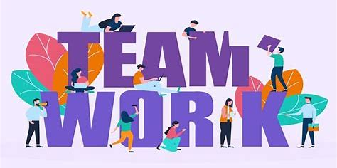

We are dedicated to improving the lives of individuals in underserved communities through education, outreach, and volunteer work. Join us in making a difference today!
Founded in 2020, our organization focuses on community development, healthcare support, and educational programs. Our goal is to empower people and foster sustainable change.
Thinking in the eyes of Hope Horizons, we assert that we can build impactful change in impoverished societies, yet empowering people through education, healthcare, and other basic resources. We are a charitable trust set up in 2020, with an objective of helping to strengthen and give people reasons to smile when things seem not to be going their way and instead pushing them to seek better times.
Get Involved
Do you want to know how you can be part of Hope Horizons and help the victims healed by this marriage separation? Should you have any information on new affairs planned by the above mentioned charity, please visit the page with the information related to its future activities or try and make a donation so that this mission striving to transform lives remains fulfilled.
Join Us on This Journey
Our team at Hope Horizons believes that small acts of kindness can create ripple effects that change lives. Join us as we continue to empower communities and inspire hope for a better future.